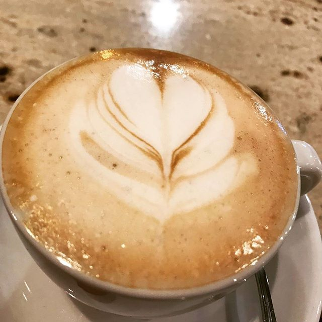
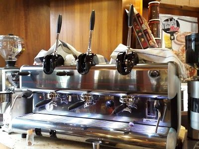
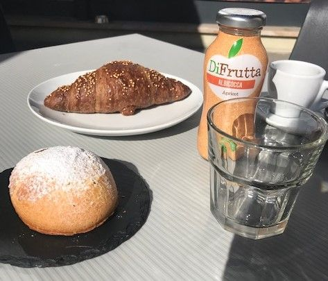
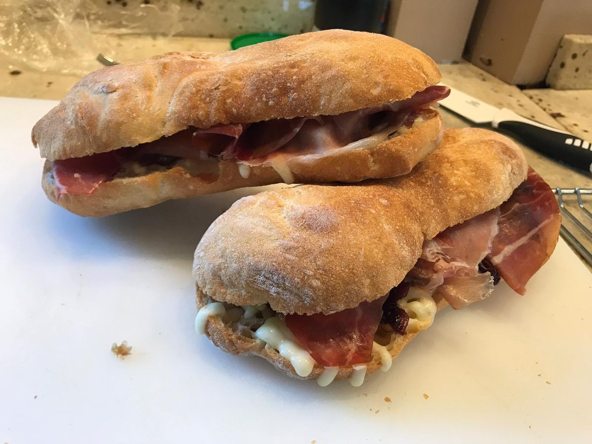
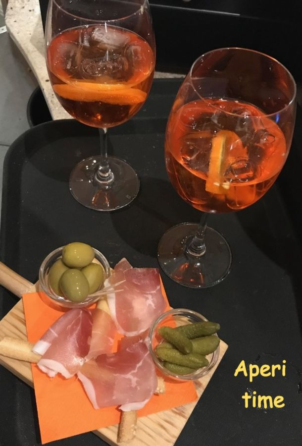
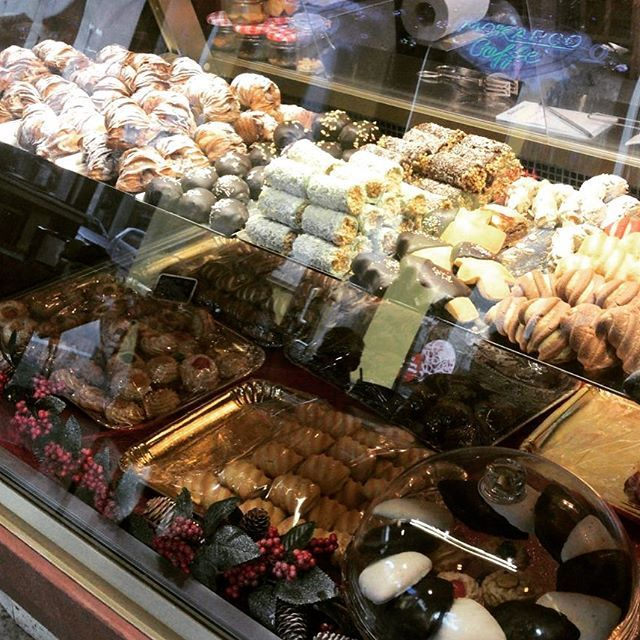
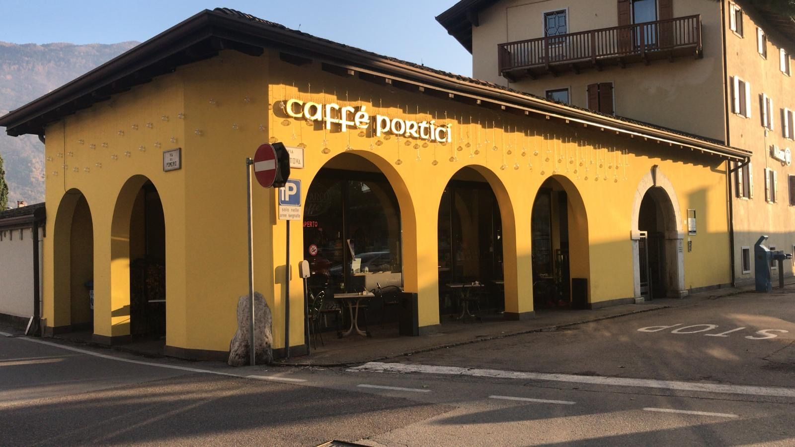

Cappuccino
È sempre l'ora di un buon caffè o di un cappuccino. Accomodati, e sorseggialo con calma.
Colazione, caffè, panini farciti al momento, pranzi veloci e aperitivo, in Via Mantova 1.
Si alzano le serrande alle 6:30



Le colazioni e i panini li prepariamo al momento. Si sta al coperto, oppure fuori sotto i portici quando c'è il sole.

È sempre l'ora di un buon caffè o di un cappuccino. Accomodati, e sorseggialo con calma.

Brioche e dolci in vetrina dalla mattina presto, dalle 6:30.
Farciti al momento, per un pranzo veloce o una pausa a metà giornata.
Da gustare in compagnia, a fine giornata.
| Lunedì | 6:30 - 20:00 |
|---|---|
| Martedì | 6:30 - 20:00 |
| Mercoledì | 6:30 - 20:00 |
| Giovedì | 6:30 - 20:00 |
| Venerdì | 6:30 - 20:00 |
| Sabato | 6:30 - 20:00 |
| Domenica | 8:00 - 13:00 |

Portici Caffè 2.0
Via Mantova 1, 38062 Arco
Tel. e WhatsApp 393 564 3087 · porticicaffe2.0@outlook.it